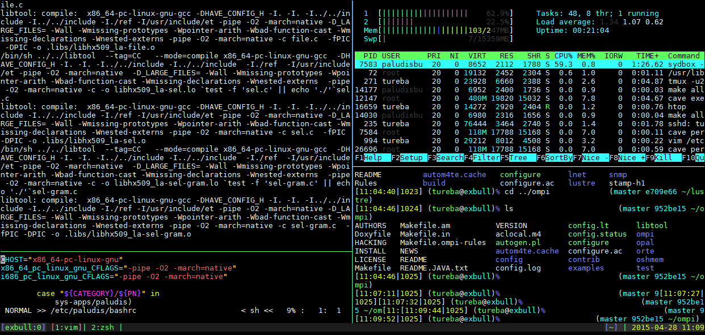

Introduction to tmux
Here is a short divergence from server-side tools to one that helps your daily terminal experience. It is a terminal multiplexer called tmux.
What does a terminal multiplexer do? It allows your one terminal session to become many terminal sessions that look like this.

Powered by keyboard shortcuts
We're working in the terminal here. So everything will be activated by keyboard shortcuts.
Tmux does have one problem though. The default keyboard shortcuts SUCK. If you're familiar with screen, it used a ctrl-A based activation sequence. Tmux uses ctrl-b which is fine, but not what I was used to.
Further more, the keys to create new panes and adjust them were not intuitive. So for usability I followed the guide in the Pragmatic Programmers tmux - Productive Mouse Free Development.
Their example .tmux.conf file is available in the book's Source Code section.
The Common Shortcuts
Remember - these are the common shortcuts of a modified tmux configuration. But this configuration is loaded on to the classes VM, so I encourage you to be in tmux throughout the day's work.
Creating panes
ctrl-a + |(that is a pipe) splits the pane horizontallyctrl-a + -splits the pane vertically
ctrl-a + hMove the cursor to the pane to the rightctrl-a + jMove the cursor to the pane abovectrl-a + kMove the cursor to the pane belowctrl-a + lMove the cursor to the pane to the left
ctrl-a + HMake the pane larger to the rightctrl-a + JMake the pane larger abovectrl-a + KMake the pane larger downctrl-a + LMake the pane larger to the left
ctrl-a + }Moves the current content rightctrl-a + {Moves the current content left
Workout
We are going to complete the following actions
- tmux is already installed on our Deployments VM. So
vagrant upin thedeploymentsfolder of this project's Git repo. - Start up
tmux. You won't notice much difference at first. - Make the panes in the tmux session look like the picture above. Two panes on the left half, two panes on the right half. The left half split "unevenly".
- That's it!